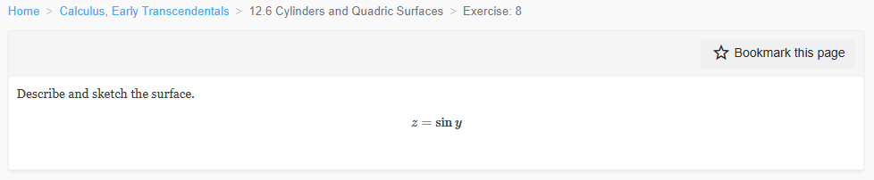
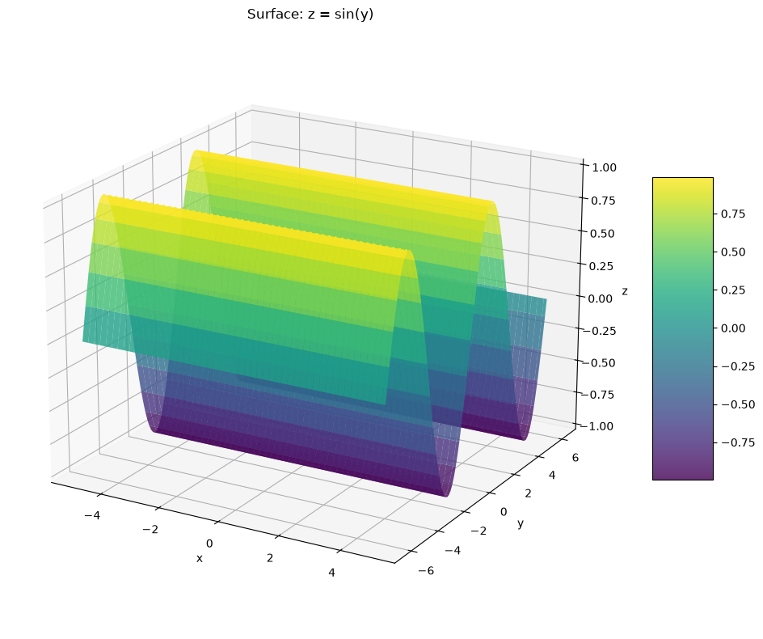
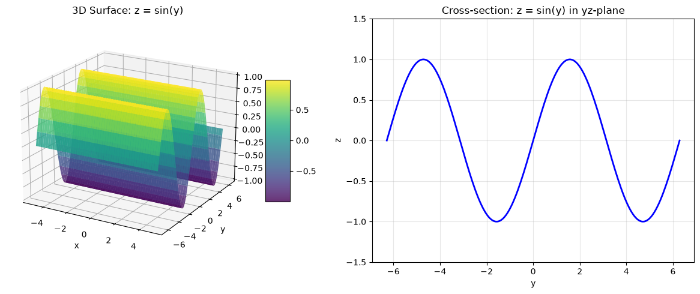
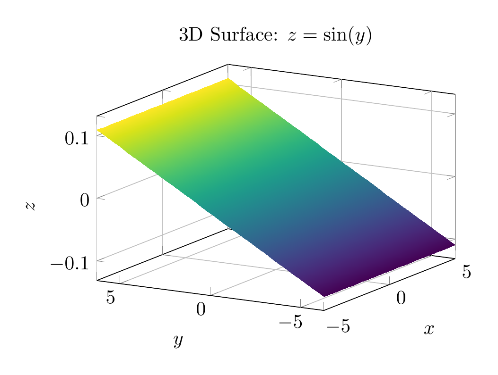
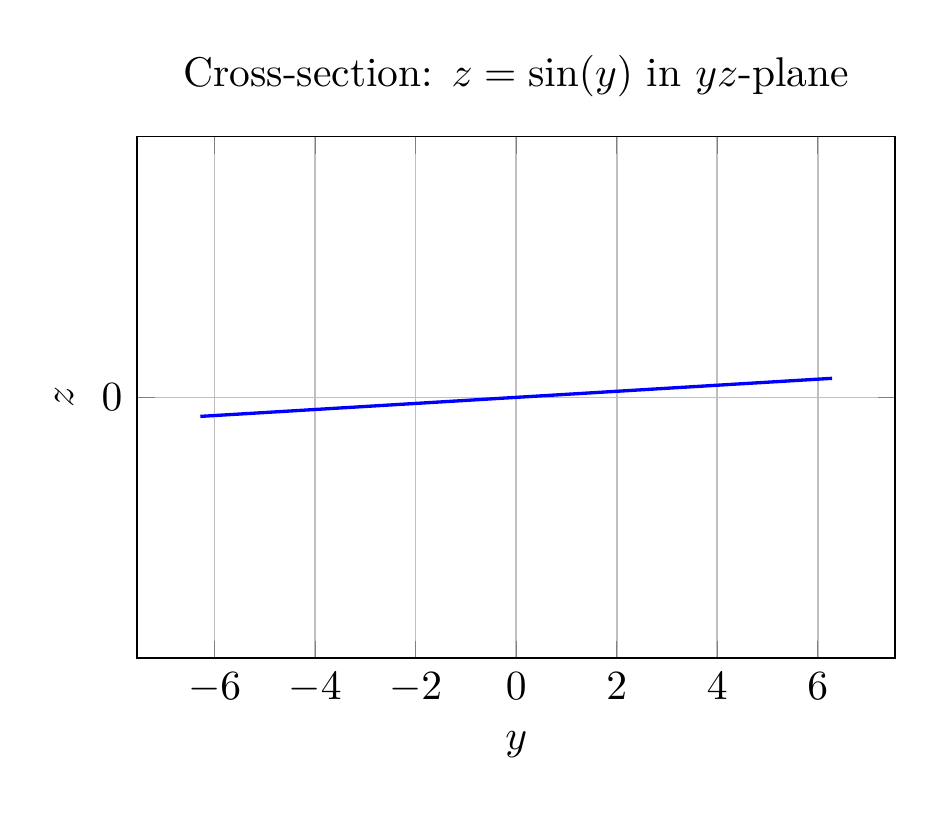

Path: mcma-Qwen3.5-397B-A17B/calculus-12.6.8/chat_20260825_141146_185241_utc_0800
Problem
Please solve the math problem in the image.

End of problem
Answer
# Solution: Describe and Sketch the Surface $z = \sin(y)$
## Description
The surface $z = \sin(y)$ is a **cylindrical surface** (specifically, a **trigonometric cylinder**). Here's why:
### Key Characteristics:
1. **Independent of $x$**: The equation $z = \sin(y)$ does not contain the variable $x$. This means that for any fixed value of $y$, the value of $z$ remains constant regardless of what $x$ is.
2. **Cylindrical nature**: Since the equation is independent of $x$, the surface extends infinitely in both the positive and negative $x$-directions. Every cross-section parallel to the $yz$-plane (i.e., for any fixed $x = c$) gives the same curve: $z = \sin(y)$.
3. **Generating curve**: In the $yz$-plane (where $x = 0$), the equation traces out the familiar sine wave $z = \sin(y)$, which oscillates between $z = -1$ and $z = 1$ with period $2\pi$.
4. **Surface formation**: The complete surface is formed by taking this sine curve in the $yz$-plane and translating (extruding) it parallel to the $x$-axis. This creates a "wavy wall" or "corrugated sheet" that extends infinitely in the $x$-direction.
### Geometric Properties:
- **Periodicity**: The surface is periodic in the $y$-direction with period $2\pi$
- **Bounds**: $-1 \leq z \leq 1$ for all points on the surface
- **Symmetry**: The surface is symmetric with respect to the $xz$-plane (since $\sin(-y) = -\sin(y)$, it has odd symmetry in $y$)
- **Rulings**: The surface contains straight lines (rulings) parallel to the $x$-axis, making it a ruled surface
## Classification
This is a **cylinder** in the mathematical sense (not necessarily circular). In multivariable calculus, a cylinder is defined as a surface consisting of all lines (called rulings) that are parallel to a given line and pass through a given plane curve. Here:
- The plane curve is $z = \sin(y)$ in the $yz$-plane
- The rulings are parallel to the $x$-axis
## Visual Representation
The plots below show:
1. **3D view**: The complete surface showing how the sine wave extends along the $x$-axis
2. **2D cross-section**: The generating curve $z = \sin(y)$ in the $yz$-plane
$\boxed{\text{The surface } z = \sin(y) \text{ is a cylindrical surface formed by extruding the sine curve } z = \sin(y) \text{ along the } x\text{-axis.}}$
---


\documentclass[border=10pt]{standalone}
\usepackage{pgfplots}
\usepgfplotslibrary{colormaps}
\pgfplotsset{compat=1.18}
\begin{document}
\begin{tikzpicture}
\begin{axis}[
xlabel={$x$},
ylabel={$y$},
zlabel={$z$},
title={3D Surface: $z = \sin(y)$},
view={-60}{20},
colormap/viridis,
grid=major,
width=8cm,
height=6cm,
]
\addplot3[
surf,
shader=interp,
domain=-5:5,
y domain=-2*pi:2*pi,
samples=40,
samples y=40,
] {sin(y)};
\end{axis}
\end{tikzpicture}
\end{document}

\documentclass[border=10pt]{standalone}
\usepackage{pgfplots}
\pgfplotsset{compat=1.18}
\begin{document}
\begin{tikzpicture}
\begin{axis}[
xlabel={$y$},
ylabel={$z$},
title={Cross-section: $z = \sin(y)$ in $yz$-plane},
grid=major,
width=8cm,
height=6cm,
ymin=-2*pi,
ymax=2*pi,
ymax=6.28,
ymin=-6.28,
ytick={-6.28, -4.71, -3.14, -1.57, 0, 1.57, 3.14, 4.71, 6.28},
yticklabels={$-2\pi$, $-\frac{3\pi}{2}$, $-\pi$, $-\frac{\pi}{2}$, $0$, $\frac{\pi}{2}$, $\pi$, $\frac{3\pi}{2}$, $2\pi$},
ymax=1.5,
ymin=-1.5,
]
\addplot[
domain=-2*pi:2*pi,
samples=100,
thick,
blue,
] {sin(x)};
\end{axis}
\end{tikzpicture}
\end{document}

End of answer